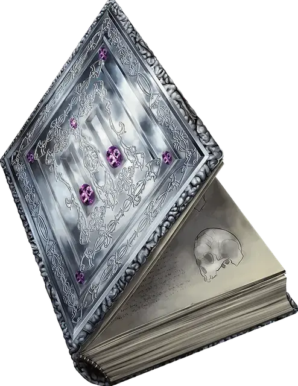

Фолиант чистых мыслей
Tome of Clear Thought
Чудесный предмет, очень редкий

Рекомендованная стоимость 40 000 ЗМ
В этой книге содержатся упражнения на память и логику, и слова в ней пронизаны магией. Если вы потратите 48 часов в течение не более чем шести дней на изучение содержания книги и отработку её рекомендаций, ваш Интеллект увеличивается на 2, но не выше 30. После этого книга теряет свою магию, но восстанавливает её спустя столетие.